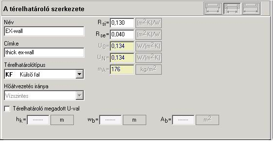

4.4.1. A térelhatároló általános adatai
Itt szerkesztjük a térelhatárolót, azaz írjuk be és/vagy módosítjuk az adatait. A térelhatároló szerkesztésének ablakához át lehet lépni:
- a definiált térelhatárolók fájában, új térelhatároló definiálása esetén a
„Térelhatároló-definíció hozzáadása” ikonra történõ
kattintással, vagy ennek az utasításnak a felbukkanó menübõl történõ
meghívásával, illetve „A menü kibontása”  nyomógomb vagy
az F7 billentyû használatával. A más definiált térelhatárolókhoz pedig a
kijelölésükkel.
nyomógomb vagy
az F7 billentyû használatával. A más definiált térelhatárolókhoz pedig a
kijelölésükkel.
- a térelhatárolók táblázatában, az egér jobboldali gombjával történõ kettõs kattintással vagy az Enter billentyû használatával a kiválasztott térelhatárolón.

Az általános adatokban a felhasználó definiálhat megadott „Uo” együtthatójú térelhatárolót is a rétegek definiálása nélkül a „Megadott U-jú térelhatároló” mezõ megjelölésével, és az „Uo” (vagy az „R”) együttható beírásával az „Uo” mezõbe. Az így definiált térelhatárolóknál a felhasználó maga tölti ki az alább részletezett mezõket.
Ilyen módon kell az épületben levõ ablakokat és az ajtókat is definiálni. Ahhoz, hogy a programmal effektíven lehessen dolgozni, jó itt megadni az ablakok és ajtók méreteit, mivel munka közben ezt a program, a térelhatároló nevének megadása után, automatikusan meghívja. Az ablakok és ajtók magasságát és szélességét a tok belsõ méreteinek megfelelõen kell megadni (a szabványoknak megfelelõen)
Az ablak két fõ részre van osztva:
- a felsõ rész a térelhatárolók általános adatait,
- az alsó rész a térelhatároló rétegeinek táblázatát tartalmazza.
A térelhatároló általános adatai magukban foglalják:
A térelhatároló neve – a felhasználó írja be abban az esetben, ha nem adtuk meg a térelhatároló névmintáját. Ajánljuk, hogy a beírt név rövid, leíró, jelzésszerû legyen, pl. „Jföd”, a térelhatároló részletes leírását pedig a felhasználó a „Leírás” mezõben adhatja meg.
leírás – a felhasználó a nevet magyarázattal egészítheti ki, pl. fa, járható födém.
A térelhatároló típusa – a listából választható:
- KF – külsõ fal,
- BF – belsõ fal
- ÁfF – átjáró feletti födém,
- T – tetõ vagy járható tetõ,
- BF – belsõ födém,
- PT – padló a talajon,
- FT – fal a talajnál
- KA – külsõ ablak
- BA – belsõ ablak
- KAj – külsõ ajtó
- BAj – belsõ ajtó
A hõáramlás iránya
A program automatikusan írja be az állandó hõáramlási iránnyal rendelkezõ térelhatárolókhoz, pl. külsõ falakhoz, talajon levõ padlókhoz, stb. A belsõ térelhatárolóknál, mint a födémeknél, ajtóknál, ahol a hõáramlás iránya változhat, a felhasználó önállóan választja ki.
Rsi – hõelnyelési ellenállás a térelhatároló belsõ felületén
A program írja be a szabványra támaszkodva a kiválasztott térelhatárolótípus alapján, és a hõáramlás irányával egyezõen.
Rse – hõelnyelési ellenállás a térelhatároló külsõ felületén
A program írja be a szabványra támaszkodva a kiválasztott térelhatárolótípus alapján, és a hõáramlás irányával egyezõen.
Uo – hõátbocsájtási tényezõ
A rétegekbõl álló térelhatárolóra a program automatikusan számítja ki. A megadott „Uo” tényezõjû térelhatárolóknál a felhasználónak kell beírnia.
UN – normatív hõátbocsájtási tényezõ
Ennek az értéke magában foglalja a térelhatárolók Uo hõátbocsájtási együtthatójának pótlékait, amelyek a nap általi besugárzás és a térelhatároló hõtechnikai tulajdonságait veszik figyelembe. A program által a térelhatároló Uo tényezõjének értéke, valamint a térelhatároló típusa alapján számított érték.
mA – a térelhatároló felületi tömege a térelhatároló felületének 1m2–re viszonyítva
Ez az érték a térelhatárolónak a felületéhez viszonyított súlyát adja meg. Ennek megadása lehetõvé teszi az egész épület hõveszteségének helyes kiszámítását a belsõ hõmérséklet Dta korrekciós együtthatójának meghatározásával. Ez az együttható pedig az épület fûtött része térelhatárolóinak súlyától függ. A rétegekbõl álló térelhatárolóra a program számítja ki. A megadott „Uo” tényezõjû térelhatárolóknál a felhasználónak önállóan kell beírnia.
Sd – a térelhatároló vastagsága
A rétegekbõl álló térelhatárolóra az értéket a program számítja ki. A megadott „U” együtthatójú térelhatárolóknál a felhasználónak kell önállóan beírnia. A mezõ a talajon levõ padló, külsõ fal típusú térelhatárolóknál látható.
C/A – a térelhatároló hõtérfogata a térelhatároló 1m2–re viszonyítva
Ez az érték a térelhatárolóban elraktározott hõmennyiséget adja meg a belsõ hõmérséklet ± 1K tartományban mozgó, szinuszos változásánál, az adott idõintervallumban. A kiszámítása vagy a felhasználó általi megadása lehetõvé teszi, hogy a program meghatározza a hõnyereségek kihasználásának együtthatóját. A 20 cm-nél vastagabb térelhatárolókhoz a hõtérfogatot a program a térelhatárolónak a külsõ oldal felõl számított 10 cm-es mélységéig számítja. A 20 cm-nél vékonyabb térelhatárolókhoz a hõtérfogat meghatározása a teljes térelhatárolóra történik. A rétegekbõl álló térelhatárolóra a program automatikusan számítja. A megadott „U” együtthatójú térelhatárolóknál a felhasználónak kell beírnia.
hk– a térelhatároló magassága (hosszúsága) a belvilágban
A felhasználó önállóan tölti ki (opcionális)
wb – a térelhatároló szélessége a belvilágban
A felhasználó önállóan tölti ki (opcionális)
Ab – a térelhatároló felülete a belvilágban
A mezõt a program automatikusan határozza meg a térelhatároló beírt méretei alapján, vagy a felhasználónak kell szerkesztenie, ha a térelhatároló felületének vízszintes (függõleges) mérete nem lett meghatározva, (opcionális).
! Az, hogy a térelhatárolóméretek beírása a programnak ezen a helyén történik, mentesíti a felhasználót attól, hogy a méreteket a helyiség szerkesztõablakában adja meg. Azonban az így szerkesztett térelhatárolókat csak a terv „Térelhatároló-definíciók” pozíciójában lehet szerkeszteni. Ezért itt azoknak a térelhatárolóknak a méreteit érdemes megadni, amelyeknek a hosszúsága és szélessége az egész épületen belül állandó.
Ha a felhasználó itt akarja megadni a belsõ térelhatárolók, pl. ablakok és (vagy) ajtók méreteit is, a nyomógomb felhasználásával beállítja a belsõ méreteket megadó mezõket. „A belsõ térelhatárolók átszámítása” nyomógomb csak az egész épületre vonatkozó szezonális energiaigény kiszámítása opciójának megadása után hozzáférhetõ.
! Mivel az ablakok és ajtók méreteit a külsõ méreteik alapján szokás megadni, a belvilágban mért és a külsõ méretekre vonatkozó mezõkbe egyforma értékeket kell beírni, mivel a belvilágban mért méretek itt megegyeznek a külsõ méretekkel.
A kiválasztott térelhatároló további kitöltendõ mezõi:
A tervben a következõ, talajon levõ padlótípusok lehetnek, amelyeket a felhasználó a további szigetelés típusával ad meg a „Kiegészítõ szigetelés típusa” mezõben. Az említett típusok a következõk:
- lemez a talajon – a lemez típusú padló a talajon az összes, teljes felületével a talajjal érintkezõ padlóra vonatkozik, függetlenül attól, hogy a teljes felületével a talajra támaszkodik, vagy sem, és a talaj külsõ felületén helyezkedik le, vagy annak közelében. Az ilyen padló lehet:
· szigeteletlen – a további szigetelés típusa „Nincs”, a rétegek táblázatába semmilyen réteg nem lett beírva.
· egyenletesen szigetelt a teljes felületen – a további szigetelés típusa „Nincs”, a rétegek táblázatába a szigetelés rétege fölé, alá vagy a lemez belsejébe lett betéve,
· a peremen kiegészítõen szigetelt – vízszintesen/függõlegesen függetlenül attól, hogy nem szigetelt, vagy egyenletesen szigetelt.
- emelt padló – ez egy olyan padlószerkezet, amelyben a padló egy bizonyos távolságra van a talajtól, aminek eredményeképpen, közte és a talaj között üres légtér keletkezik. A kiegészítõ szigetelés típusa „Megemelt”,
- föld alatti – azokra a padlókra vonatkozik, amelyek a talajszint alatt találhatók. A kiegészítõ szigetelés típusa „Nincs”, a padlónak a talajszint alá süllyesztésére vonatkozó mezõk ki vannak töltve.
A talajnál levõ falra – FT
A föld alatti fal hõellenállása – Rfa. Az értéket a program automatikusan írja be a térelhatároló szerkezetek táblázatából a rétegelt térhatárolókra vonatkozó adatok alapján. A megadott hõellenállású térelhatárolókra a felhasználónak kell beírnia.
A talajon levõ padlóra – PT (általában)
A padló ellenállása „Rp”. Az értéket a program automatikusan írja be a térelhatároló szerkezetek táblázatából a rétegelt térhatárolókra vonatkozó adatok alapján. A megadott hõellenállású térelhatárolókra a felhasználónak kell beírnia.
A padló kiegészítõ szigetelésének típusa – a padló kiegészítõ szigetelésének típusát a legördülõ listából választjuk ki.
· Nincs – arra az esetre vonatkozik, amikor a padlófelület nincs kiegészítõen szigetelve. A padló lehet a teljes felületén szigetelve, vagy lehet szigeteletlen. Ha a felhasználó beírja a padló lesüllyesztésére vonatkozó mezõket, az azt jelenti, hogy ezen a módon föld alattiságot deklarált.
· Emelt –olyan szerkezetû padlóra vonatkozik, amelyben a padló a talajtól egy bizonyos távolságra van. Az ilyen módon keletkezett padlótér lehet szellõztetett vagy nem szellõztetett. Ide tartozik pl. a fa padló vagy a sûrûbordás födém.
· Vízszintes – a lemez a talajon típusú padlóra vonatkozik, amelynek a padló kerületén vízszintesen elhelyezett, perem szigetelése van.
· Függõleges – a lemez a talajon típusú padlóra vonatkozik, amelynek a padló kerületén függõlegesen elhelyezett, perem szigetelése van.
A talajon levõ padlóra
Ha a felhasználó további peremszigetelés nélküli talajon levõ padlót akar beállítani, a legördülõ listából a „Nincs” típusú kiegészítõ szigetelést kell kiválasztani.
A térelhatárolók táblázatában a felhasználó a teljes felületére egyenletesen szigeteltnek vagy nem szigeteltnek deklarálhatja betéve (vagy megfelelõen nem betéve) szigetelõ réteget az anyaglistáról.
A talajszint alá süllyesztett, talajon fekvõ padlóra
Ha a felhasználó olyan padlót akar betenni, amely a talajszint alá van süllyesztve, akkor ki kell választani a „Nincs” típusú kiegészítõ szigetelést és ki kell tölteni a „z” mezõ értékét.
z – A padló alsó szélének mélysége. Azokra az épületekre vonatkozik, amelyekben a használati tér egy része a talajszint alatt található. A felhasználó itt megadja a földalatti padló mélységét a talajszint alatt. Ha a „z” változik az épület kerülete mentén, akkor a számítást a középértékkel kell végezni. A földalatti padló lehet nem szigetelt vagy szigetelt, ahol a padló szigetelõ rétegét a felhasználó az alatta található térelhatároló szerkezetek táblázatába írja be az anyagrétegek megadásakor.
Ha a felhasználó a „z” mezõbe „0” értéket ír be, az azt jelenti, hogy ez egy nem süllyesztett lemezpadló a talajon.
A talajon levõ padlóra, vízszintes/függõleges kiegészítõ szigeteléssel
Ha a felhasználó kiegészítõ szigeteléssel ellátott, talajon levõ lemez típusú padlót akar betenni, a legördülõ listáról választja ki a „Kiegészítõ padlószigetelés” – „vízszintes/függõleges” mezõben.
BI – A kiegészítõ szigetelés szélessége (magassága)
A felhasználó mindig maga tölti ki, az alkalmazott szigetelés magasságától (szélességétõl) függõen,
Rszi – A kiegészítõ szigetelés ellenállása
Az értéket a program automatikusan írja be a térelhatároló szerkezetek táblázatából a rétegelt térhatárolókra vonatkozó adatok alapján. A megadott hõellenállású térelhatárolókra a felhasználónak kell beírnia.
Dszi – A kiegészítõ szigetelés vastagsága
Az értéket a program automatikusan írja be a térelhatároló szerkezetek táblázatából a rétegelt térhatárolókra vonatkozó adatok alapján. A megadott hõellenállású térelhatárolókra a felhasználónak kell beírnia.
Megemelt padlószerkezetû, talajon levõ padlóra
Ha a felhasználó megemelt szerkezetû padló szeretne definiálni réteges térelhatároló szerkezetként, a térelhatároló szerkezetek táblázatában a megemelt padló rétegeit el kell különíteni az anyaglistából kiválasztott légréteges padló rétegeitõl. A légréteg padlótér. Ennek a térnek szellõztetettként vagy nem szellõztetettként való deklarálása az „A” – „A furatok felülete a padlókerület egységére” mezõ kitöltésén alapul. A felhasználó az alábbi mezõk önálló kitöltésével meg is adhatja ezt a konstrukciót.
Rp – A padló ellenállása
A padló megemelt részének hõellenállása. A rétegekbõl álló térelhatárolóra a program automatikusan számítja ki. A megadott hõellenállású térelhatárolókra a felhasználónak kell beírnia.
Rpp – A padlóágy hõellenállása
Az összes, a megemelt résznél lejjebb levõ padlóréteg hõellenállása, a légréteget nem beleértve.
A program a padlóágyazat összes rétegét a talajtól való szigetelésként tekinti.
A – A nyílások felülete a padló kerületének egységére
A felhasználó által, az emelt padló szerkezetének megfelelõen kitöltött mezõ. Ha a padlóágyazat tere nem szellõztetett, akkor az értéke 0-val egyenlõ.
dpá – a megemelt padlóágyazat vastagsága
A padlóágyazat tere alatt található padlórétegek vastagsága. Az értéket a program automatikusan írja be a térelhatároló szerkezetek táblázatából a rétegelt térhatárolókra vonatkozó adatok alapján. A megadott hõellenállású térelhatárolókra a felhasználónak kell beírnia.
h- A padlófelület felsõ peremének magassága a külsõ talajszint felett
A padló elhelyezésének magasságát adja meg a külsõ talajszint felett. A felhasználó mindig maga tölti ki, az épület elhelyezésétõl függõen,
A külsõ ablakokra/ajtókra
gw – Energiaátbocsátási tényezõ az üveglapon
A programban az üvegfelületre merõlegesen beesõ napsugárzás esetére meghatározott teljes napsugárzás átengedést vesszük tekintetbe. A tipikus teljes napsugárzás átengedés a leggyakrabban alkalmazott üvegezési típusokra: az egyrétegû, közönséges üvegezésre gw = 0,85, a kettõs üvegezésre gw = 0,75. Más üvegezési típusokra a tanúsított értékeket kell figyelembe venni.
Uü – Az üvegfelület aránya az ablak/ajtó felületében
A felhasználónak kell beírnia a térelhatároló szerkezet fajtájától függõen – ablakok/ajtók és azok szerkezete.
I – A rés hossza
A külsõ térelhatárolók, mint az ablak és
ajtó, résének hosszát adja meg. A beírt méretû térelhatároló szerkezetekre az
érték automatikusan lehet kiszámolva a térelhatároló kerületeként az  ikonra történõ
kattintással. A felhasználó maga is kiszámolhatja az értékét az
ikonra történõ
kattintással. A felhasználó maga is kiszámolhatja az értékét az  ikon
kiválasztásával. A felhasználó megadhatja a rés hosszát 0 értékûre is, pl. a térelhatárolóba
fixen beépített ablakra. Üresen is lehet hagyni a mezõt, az értéknek a Del billentyû segítségével történõ
törlésével. Ez lehetõvé teszi a definiált térelhatároló szerkesztését az
„Épületstruktúrában”, a helyiség vagy az ebben a helyiségben térelhatároló
szerkesztõ ablakában.
ikon
kiválasztásával. A felhasználó megadhatja a rés hosszát 0 értékûre is, pl. a térelhatárolóba
fixen beépített ablakra. Üresen is lehet hagyni a mezõt, az értéknek a Del billentyû segítségével történõ
törlésével. Ez lehetõvé teszi a definiált térelhatároló szerkesztését az
„Épületstruktúrában”, a helyiség vagy az ebben a helyiségben térelhatároló
szerkesztõ ablakában.
A – A rések légáteresztõképességi együtthatója
A felhasználó írja be a programban használt ablakok/ajtók légzárása alapján. A program megengedi az ablakok/ajtók teljes légzárásának deklarálását a 0 érték beírásával ebbe a mezõbe.
A külsõ ajtókra
A legördülõ listából kiválasztható ajtótípus (a légzárást meghatározó):
- Normális, küszöb nélküli
- Légzáró, küszöbbel